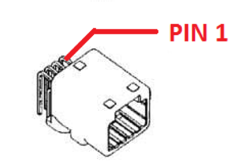

Apollo传感器单元（ASU）安装指南
Apollo传感器单元（ASU）被设计为和工业级PC（IPC）协同工作以实现在Apollo自动驾驶平台上的传感器数据融合、车辆控制和网络访问。
ASU系统提供多种接口以收集来自不同传感器的数据，包括摄像机、激光雷达、雷达和超声波传感器。该系统同样使用GNSS接收器的秒脉冲（PPS）和GPRMC信号实现摄像机和激光雷达的数据收集同步。
ASU和IPC的通讯通过PCI Express接口。ASU收集传感器数据并通过PCI Express接口传输给IPC，IPC通过ASU发送车辆控制指令，该指令基于区域网络控制协议（CAN协议）。
另外，应用以太网的激光雷达连接，应用4G LTE模块的WWAN网关和应用WiFi模块的WiFi访问将在未来的版本中发布。

系统接口
前面板接口
- 外部GPS PPS / GPRMC输入接口
- FAKRA摄像机数据输入接口（5个接口）
- 10/100/1000M Base-T以太网接口（2个接口）
- KL-15 (AKA Car Ignite)信号输入接口
后面板接口
- 通用UART接口（保留）
- 外部PCI Express接口（支持X4或X8）连接IPC请使用EXTN
- GPS PPS / GPRMC输出接口（3个接口）
- 连接Stereo Camera的电源和PPS/GPRMC输出接口
- CAN Bus（4个接口）
- 主电源输入接口
购买渠道
Apollo传感器单元（ASU）目前只提供给Apollo合作伙伴和特定的开发者。关于使用和获取ASU的问题可通过Apollo官方渠道获得更多信息。
安装
- 电源线
主电源来自于车辆电池9V ~ 36V, 120W

| MFR | MPN | Description |
|---|---|---|
| TE Connectivity | DTF13-2P | DT RECP ASM |
| PIN # | NAME | I/O | Description |
|---|---|---|---|
| 1 | 12V | PWR | 12V (9V~36V, 120W) |
| 2 | GND | PWR | GROUND |
- FPD-Link III摄像机
在ASU的前面板上有5个从右至左分别标记为1~5的FAKRA接头连接FPD Link III摄像机。ASU可以支持多达5个摄像机，摄像机的解串行单元(TI, DS90UB914ATRHSTQ1) 将FPD Link III的信号转换为并行的数据信号。
| Camera # | I2C Address | Deserializer |
|---|---|---|
| 1 | 0x60 | DS90UB914ATRHSTQ1 |
| 2 | 0x61 | DS90UB914ATRHSTQ1 |
| 3 | 0x62 | DS90UB914ATRHSTQ1 |
| 4 | 0x63 | DS90UB914ATRHSTQ1 |
| 5 | 0x64 | DS90UB914ATRHSTQ1 |
- GPS同步输入通道
GPS同步输入通道使用 接头是TE Connectivity的1565749-1。接头和引脚的信息在下图中展示。

| MFR | MPN | Description |
|---|---|---|
| TE Connectivity | 1565749-1 | Automotive Connectors 025 CAP ASSY, 4 Pin |
| PIN # | NAME | I/O | Description |
|---|---|---|---|
| 1 | NC | NC | NO CIRCUIT |
| 2 | GPRMC | INPUT | GPS Specific information contains time, date, position, track made good and speed data provided by GPS navigation receiver. RS-232 Signal level. |
| 3 | GND | PWR | GROUND (the ground for PPS and GPRMC should be shorted on ground) |
| 4 | PPS | INPUT | Pulse per Second from GPS transceiver, 3.3V CMOS Signal |
- GPS同步输出通道
定制的8 Pin接头为需要同步输出的传感器例如激光雷达、摄像机等提供了3种PPS/GPRMC输出序列。

| MFR | MPN | Description |
|---|---|---|
| TE Connectivity | 1376350-2 | Automotive Connectors 025 I/O CAP HSG ASSY, 8 Pin |
| PIN # | NAME | I/O | Description |
|---|---|---|---|
| 1 | GPRMC0 | OUTPUT | Channel 0, GPRMC OUTPUT, RS-232 Signal |
| 2 | PPS0 | OUTPUT | Pulse per Second from GPS transceiver, 3.3V CMOS Signal |
| 3 | GPRMC1 | OUTPUT | Channel 1, GPRMC OUTPUT, RS-232 Signal |
| 4 | PPS1 | OUTPUT | Pulse per Second from GPS transceiver, 3.3V CMOS Signal |
| 5 | GPRMC2 | OUTPUT | Channel 2, GPRMC OUTPUT, RS-232 Signal |
| 6 | GND | PWR | GROUND |
| 7 | GND | PWR | GROUND |
| 8 | PPS2 | OUTPUT | Pulse per Second from GPS transceiver, 3.3V CMOS Signal |
- CAN卡接口
CAN卡提供了4种车辆接口，数据通路（传输路径）为：

| MFR | MPN | Description |
|---|---|---|
| TE Connectivity | 1318772-2 | Automotive Connectors 025 I/O CAP HSG ASSY, 12 Pin |
| PIN # | NAME | I/O | Description |
|---|---|---|---|
| 1 | CANH-0 | INOUT | Channel 0, CANH |
| 2 | CANL-0 | INOUT | Channel 0, CANL |
| 3 | GND | PWR | Ground |
| 4 | CANH-1 | INOUT | Channel 1, CANH |
| 5 | CANL-1 | INOUT | Channel 1, CANL |
| 6 | GND | PWR | Ground |
| 7 | CANH-1 | INOUT | Channel 2, CANH |
| 8 | CANL-1 | INOUT | Channel 2, CANL |
| 9 | GND | PWR | Ground |
| 10 | CANH-2 | INOUT | Channel 3, CANH |
| 11 | CANL-2 | INOUT | Channel 3, CANL |
| 12 | GND | PWR | Ground |
免责声明
This device is Apollo Platform Supported